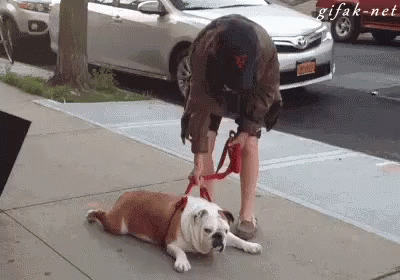

Dog Not Learning?
|
As a dog owner, you may become frustrated when it appears that your dog isn't learning the trick you're intending. As hard as it may be to hear, normally it is because of
something the owner is doing as to why the dog will not perform as intended. One common mistake that the owner and dog may be having is practicing too much. Practicing
twice a day is a great idea, however, the dog will get tired if you try to practice too many times per day, or for too long. Limit training sessions to 15-30 minutes to
get the best results. Keep track of what times you and your dog have the best training sessions, and stick to the schedule that works best. If you are tired when you come
home from work, your dog will sense those feelings from you. You want to practice during a time when you are calm and at ease. As well, waking up your dog from a nap for
example will not help them be successful because they will not be as willing to participate.
|

|
|---|